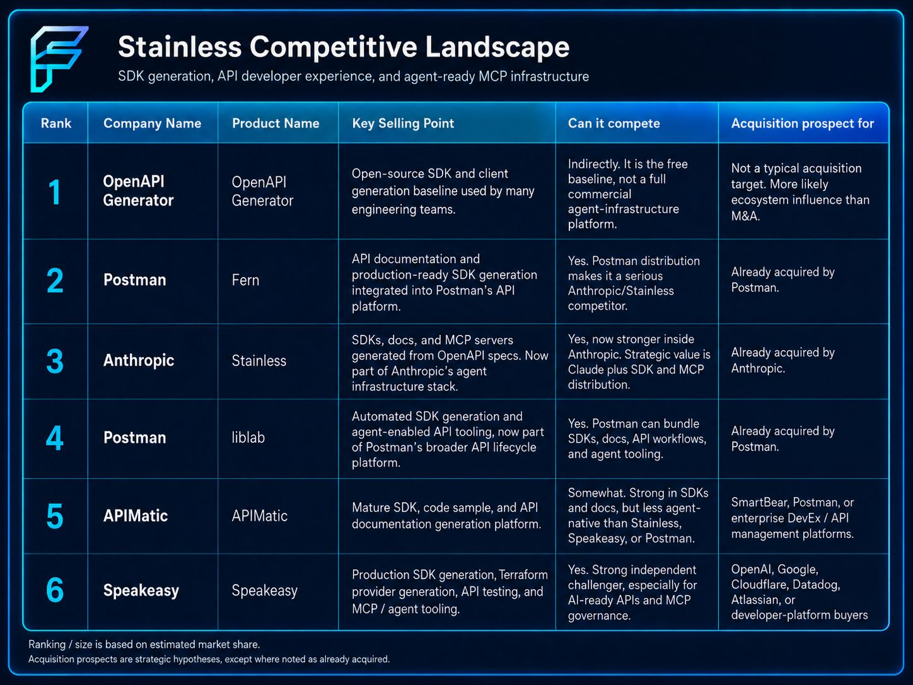

Anthropic announced that it has acquired Stainless, a developer tools company that builds SDK and MCP server infrastructure. Stainless has already been central to Anthropic's developer ecosystem, generating every official Anthropic SDK since the early days of the Anthropic API.
As a widely shared Hacker News thread discussed, this is not mainly about making Claude smarter. It is about making Claude easier to connect, deploy, and use across the software world. That makes this an agent infrastructure acquisition.
What Stainless Actually Does
Stainless helps turn APIs into SDKs, documentation, and MCP servers. In plain English, it makes software systems easier for developers and AI agents to access. That matters because the next phase of AI will not be defined only by model performance. As TechCrunch noted, it will also be defined by how easily agents connect to real tools, real data, and real workflows.
Every official Anthropic SDK -- Python, TypeScript, Java, Go -- has been generated by Stainless infrastructure since the API launched. The acquisition formalizes a relationship that was already foundational to Anthropic's developer experience.

Why This Matters for AI Democratization
If agent infrastructure becomes easier to generate and maintain, more companies can move beyond AI demos and into practical deployment. They will not need every integration to be custom-built from scratch. Their APIs, tools, and systems can become more agent-ready by default.
Anthropic is trying to control more of the connective tissue between Claude and the software world: SDKs, connectors, MCP servers, and API usability. That could make AI agents more accessible, more reliable, and more ubiquitous.
The Competitive Landscape
Stainless did not exist in a vacuum. The SDK and MCP infrastructure space has seen rapid consolidation, and three key moves have already happened:
- Anthropic acquired Stainless -- Formalizing the infrastructure behind every Anthropic SDK and signaling that developer tooling is a strategic priority, not just an operational convenience.
- Postman acquired Fern -- Postman, already the dominant API lifecycle platform, added Fern's SDK generation capabilities to its existing toolkit, strengthening its position as the end-to-end API platform.
- Postman also acquired liblab -- Further deepening its SDK generation play. Postman now owns two separate SDK generation tools, signaling a clear bet that API DX is a core platform capability.
That leaves two notable independents still on the board: APIMatic, a mature platform for SDKs and documentation (a potential target for SmartBear or another API lifecycle player), and Speakeasy, a strong independent challenger focused on AI-ready APIs and MCP governance (a natural target for OpenAI, Google, or Cloudflare).
What This Means for Your AI Strategy
If you are building AI systems today, the SDK and integration layer matters more than you might think. The ease with which your agents can connect to your tools, databases, and third-party services directly determines whether your AI initiative stays in demo mode or reaches production.
The consolidation of SDK generation and MCP infrastructure means that the major AI platforms are competing not just on model quality, but on how easily their models plug into the rest of your stack. That is good news for enterprises -- it means the integration burden is shifting from you to your AI providers.
But it also means that choosing an AI platform is increasingly a bet on its ecosystem, not just its model. If you build deeply on Claude's MCP infrastructure, you are betting that Anthropic's approach to agent connectivity becomes the standard. If you route through Postman's API platform, you are betting on their approach. These bets are not mutually exclusive -- and the smartest strategy is to keep your integration layer abstracted enough that you can switch, compose, and adapt as the landscape continues to consolidate.
FutureInSites helps companies design AI architectures that stay flexible as the ecosystem evolves. We assess your integration dependencies, identify lock-in risks, and build the abstraction layers that keep your options open. Get in touch if you want to stress-test your current architecture against the shifting landscape.